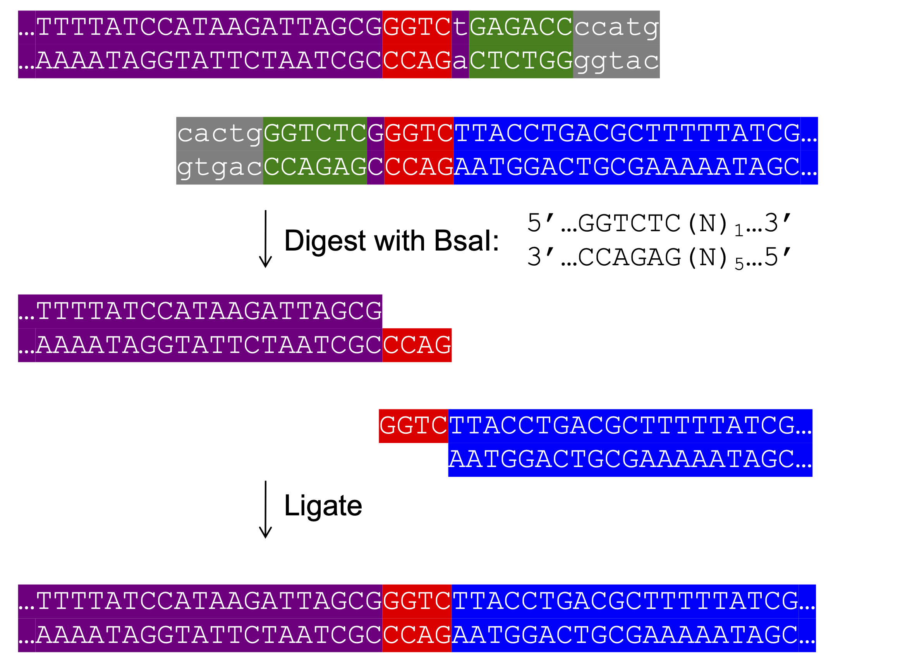

Golden Gate Assembly¶
In previous tutorials, we built the pET-INS plasmid using both traditional restriction enzyme cloning and Gibson Assembly. In this tutorial, you'll use Golden Gate Assembly to build the same construct—while learning how this method enables precise, scar-controlled, multi-part DNA construction.
What is Golden Gate Assembly?¶

Golden Gate Assembly is a method for joining DNA fragments using Type IIs restriction enzymes like BsaI, BsmBI, BbsI, and SapI. These enzymes cut a fixed number of bases away from their recognition sites, which allows the creation of custom 4 bp overhangs that control exactly where and how parts join together.
Golden Gate is powerful because it allows:
- Custom-designed sticky ends for precise, seamless (or intentionally scarred) ligation
- Single-pot digestion and ligation, increasing efficiency
- Automatic removal of restriction sites from the final product
These features make it ideal for modular cloning, where standardized parts and repeatable junctions are critical.
The reaction is designed so that digestion and ligation happen together, recognition sites are eliminated, and sticky ends control the final sequence junctions.
⚠️ This means:
- The recognition site must not appear in the final product, or it will be re-cleaved.
- The method can be iterated using the same enzyme again and again, since the site is removed during assembly.
Designing Golden Gate Oligos¶
Let’s now walk through a complete Golden Gate Assembly plan to make pET-INS, just like we did in the Gibson version.
Step 1: Define Your Product¶
Start by constructing a model of the final pET-INS plasmid, just as you did with Gibson.
- Open the pET28a vector sequence and convert it to UPPERCASE.
- Open the insulin cDNA sequence and convert it to lowercase.
- Paste the INS cds into the intended insertion site as done in the basic cloning tutorial.
🔗 Downloads:
Step 2: Annotate Junctions and Annealing Regions¶
Once you’ve created a model of your final product, define these regions:
For each junction where two fragments will join:
A. Choose the Sticky End¶
- Choose 4 bp from the existing sequence at the junction to serve as the sticky end. These should be non-palindromic (e.g., avoid
AATT,GATC, etc.) to ensure correct orientation. - Create a feature annotation called
"sticky end"over those 4 bases. - In the visualization below, these are highlighted in orange as “sticky end 1” and “sticky end 2”, corresponding to the two junctions in this construct.
B. Mark the Forward Anneal Region¶
Starting at the junction and extending downstream, choose 20–30 bp that follow standard primer design rules. Label this forward anneal.
C. Mark the Reverse Anneal Region¶
Identify 20–30 bp upstream (5′) of the junction. This sequence lies on the coding strand, not its reverse complement. Label it reverse anneal.
Step 3: Design Oligos¶
Design the junction + annealing region for each oligo first. These are the 3′ ends that will bind to your template.
A. Forward Oligo¶
- From the forward strand of your product, copy the 4 bp sticky end plus ~20 bp downstream (i.e., to the right).
- This is your junction + anneal region.
B. Reverse Oligo¶
- From the reverse strand of your product, copy the 4 bp sticky end plus ~20 bp upstream (i.e., to the left).
- Reverse complement this sequence. This is your junction + anneal region for the reverse oligo.
C. Add the Golden Gate Prefix¶
Add the following prefix to both the forward and reverse oligos:
ccataGGTCTCa
This includes:
ccata= arbitrary 5' tailGGTCTC= BsaI recognition sitea= one-base arbitrary spacer before the sticky end
Final orientation of Golden Gate oligos (both forward and reverse):
5' tail - BsaI - spacer - sticky end - annealing region - 3'
⚠️ Important: For the reverse oligo, only the junction + annealing region is reverse complemented. The prefix remains in forward orientation.
🧬 5′ tail design tip: NEB data shows BsaI cuts efficiently with as little as 1 bp upstream of its site. While 5 bp is a safe general rule, it's often more than necessary.
Do the same for each junction. Realistically, you can do this PCR-based variant of Golden Gate for up to 4 fragments. You can also do golden gate with clonal plasmid DNA. With the higher quality DNA and the restriciton sites being further from the ends, plasmid-based golden gate is much more efficient for multi-fragment assembly than the PCR variant.
Here is an example solution:
PCR insF2 insR2 insulin_cds ins_pcr PCR vecF2 vecR2 pET28a vec_pcr GoldenGate vec_pcr ins_pcr BsaI pET-INS oligo insF2 ccataGGTCTCaatggccctgtggatgcgcctc oligo insR2 cagatGGTCTCaCGAGctagttgcagtagttctccag oligo vecF2 ccataGGTCTCaCTCGAGCACCACCACCACCAC oligo vecR2 cagatGGTCTCaccatGGTATATCTCCTTCTTAAAG
Step 4: Simulate It¶
You can simulate the PCR steps of the construction file as you've done previously with your sequence editor or an automation tool. ApE and Benchling both have visual tools to simulate the Golden Gate step as well. C6 can also simulate your entire construction file, and you can try it out in the box below.
💡 Tip: If you’re unsure about orientation after simulating, remember there are only two possibilities—it’s either the sequence you expect or its reverse complement.
🧪 Try It: Swap the Promoter¶
In this quiz, you will replace the T7 promoter in pET-INS with the AraC_Pbad promoter using Golden Gate Assembly.
🔗 Downloads:
The T7 promoter is IPTG-inducible and requires host expression of T7 RNA polymerase. In contrast, the AraC-Pbad system is inducible by arabinose and allows tighter, titratable control of gene expression—often preferred for expressing toxic or finely regulated proteins.
Objective¶
Swap out the lacI, T7 Promoter, and lacO region in pET-INS with the sequence from AraC-Pbad. Use PCR-based Golden Gate to:
- Remove the the regulatory region from pET-INS
- Insert the AraC-Pbad fragment
- Assemble using BsaI-generated overhangs
Validate that:
- The T7, lacI, and lacO sequences are completely and precisely removed
- AraC-Pbad is present and correctly oriented
- All junctions are seamless and scarless